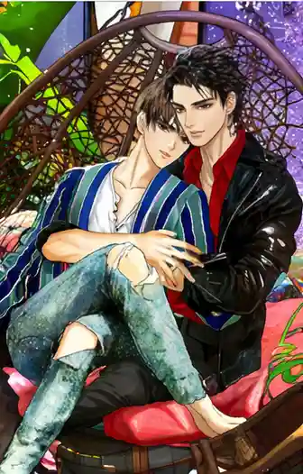
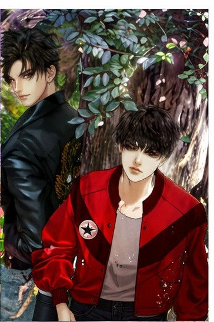
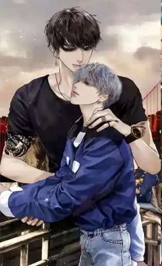
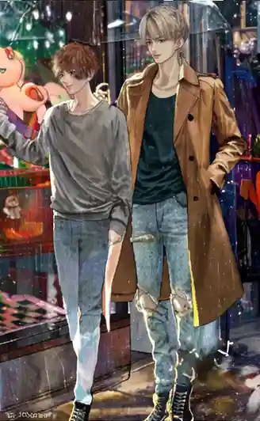

Sipnosis de las 6 novelas
En los libros de Howlsairy, cada detalle cuenta: desde el pasado oculto de Johan hasta la dulzura infinita de Phoon. ¡Y ni hablemos de cuando aparecen las parejas "extra" como Tiger-Duennao o el hermano de Duen! Es como si todos formaran una gran familia universitaria en la que queremos vivir.

East: Tag! You're Mine (Hill & Easter)
Easter decide estudiar en el norte de Tailandia para alejarse de los recuerdos de su relación pasada que terminó de forma incierta. Sin embargo, el destino hace que se reencuentre en la misma universidad con su exnovio, Hill, un brillante estudiante de medicina que lo ha estado esperando. La historia explora la sanación y el reencuentro de dos personas que nunca dejaron de quererse, superando las inseguridades que los separaron en el instituto.

North: How Much Is Your Love? (Johan & North)
North es un estudiante alegre y algo caótico que, tras una pelea de borrachos, termina debiendo una gran suma de dinero. Johan, un estudiante de medicina serio y posesivo, se convierte en su "acreedor". Lo que North no sabe es que Johan ha estado enamorado de él en secreto desde la secundaria y aprovechó esta situación para finalmente acercarse a él y protegerlo

South: Beside the Sky (Tonfah & Typhoon)
Typhoon ha vivido idealizando a Tonfah (Fa) desde que eran niños, viéndolo como un "cielo inalcanzable". Se muda de ciudad solo para estar cerca de él, con la intención de amarlo en secreto y sin esperar ser correspondido. Por otro lado, Tonfah, quien parece ser el "príncipe perfecto", siempre ha intentado acercarse a Typhoon, pero este lo rechazaba por miedo a salir lastimado de su propia fantasía.

West: The Sun From Another Star (Arthit & Daotok)
Esta es la historia con tintes más sobrenaturales del proyecto. Daotok es un chico artístico y solitario que tiene la capacidad de ver espíritus. Su vecino, Arthit, un estudiante de medicina rebelde y solitario, lo convence de ayudarlo a buscar el alma de su difunta madre. A medida que conviven y se enfrentan a situaciones fuera de lo común, ambos comienzan a abrir sus corazones, que estaban cerrados debido a traumas del pasado

Tiger & Duen Nao: Lately It's Winter Season
Esta historia se centra en Tiger, el hijo menor de un poderoso jefe de la mafia, quien lleva una vida imprudente y sin rumbo fijo debido a conflictos familiares. Todo cambia cuando conoce a Duen Nao (también llamado December), un estudiante de buen corazón, alegre y siempre dispuesto a ayudar a los demás

Jayden & Dan Nuea
La historia da un giro dramático cuando Dan Nuea (el hermano gemelo de Duen Nao) es secuestrado por error. Los captores lo confunden con su hermano Nao debido a su parecido físico, Mientras está retenido, Dan Nuea conoce a Jayden, quien también se encuentra cautivo en el mismo lugar. A pesar de las circunstancias extremas y brutales, Dan intenta ofrecerle apoyo emocional a Jayden.